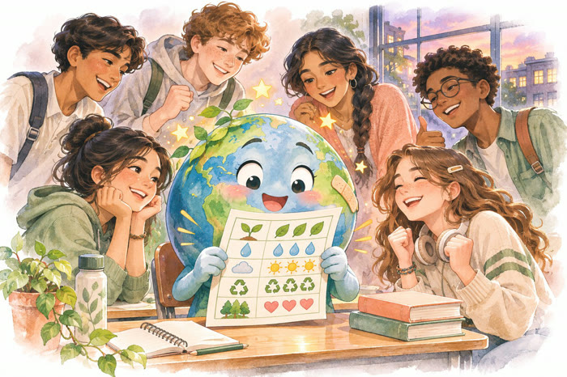

Listen to the text
Speed:

Imagine that the Earth is a student and that scientists write its school report at the end of the year. What marks would our planet get? Sadly, the mistakes in its work are not its own. They are ours. Air. Mark: 5 out of 12. Trees and ocean plants produce the oxygen that we breathe. But factories, power stations and cars send smoke and gases into the air. In many big cities the quality of the air is so low that doctors advise people to stay indoors on some days. Air pollution is not only a problem of the lungs. It changes the climate of the whole planet. Water. Mark: 4 out of 12. Water covers most of the surface of the Earth, but only a tiny part of it is fresh. Rivers carry chemicals from fields and factories to the sea. Coastal waters, where most fish are born, suffer first. Millions of tons of plastic get into the oceans every year. A plastic bottle that you use for ten minutes will float there for hundreds of years. Soil and rubbish. Mark: 4 out of 12. We produce more waste than ever. The fastest-growing kind is e- waste: old phones, computers and batteries. People buy a new phone although the old one still works. Only a small part of e-waste is recycled. The rest lies in huge dumps, often in poor countries, and poisons the ground. Wildlife. Mark: 3 out of 12. When people cut down forests and build roads, they disturb animals and destroy their homes. Many species have already become extinct, and thousands of others are fighting for survival. During the last fifty years the number of wild animals on the planet has fallen dramatically. Resources. Mark: 5 out of 12. We use oil, gas and clean water as if they were endless. They are not. Scientists warn that we may run out of some of them during the life of today's teenagers. Teacher's comment: "The student is talented and strong, but tired. Needs help from the whole class." The good news is that a report is not a final exam. Marks can be improved. Rivers have been cleaned, forests have been planted again, and some animals have returned. The question is who will do the homework. The answer is in the mirror.
Tap any sentence to hear it again.
Сподобалось? На сайті ще більше матеріалів для вчителів!
Reader, презентації, ігри, діагностичні та контрольні роботи до підручників 1-11 класів.
Перейти на сайт materials.allaenglish.com